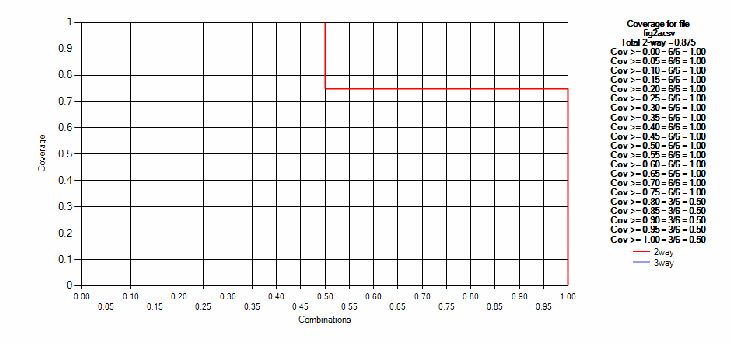
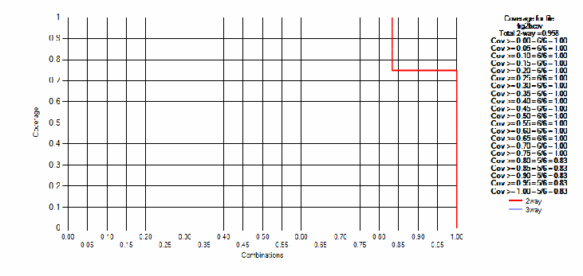
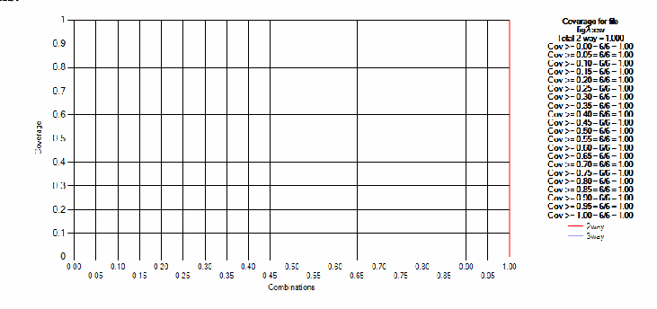
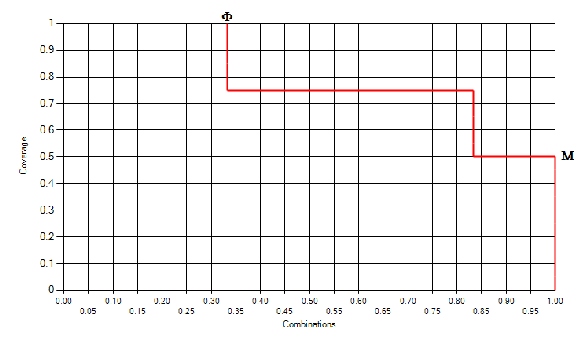
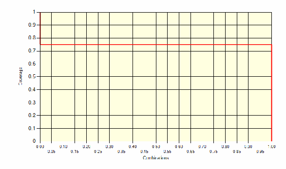

NIST IR 7878 日本語訳
英語タイトル : Combinatorial Coverage Measurement日本語タイトル : 組合せカバレッジの測定
公開日 : 2012-10-26
原文URL : https://csrc.nist.gov/pubs/ir/7878/final
翻訳編集 : 自動生成（有志による非公式の日本語訳）, 原文取得日 : 2026-10-31, 訳文 : 135 / 136 ブロック
[要約] NIST IR 7878 は、もともと組合せカバレッジのために構築されたかどうかにかかわらず、あらゆるテストスイートの t-way カバレッジの程度を評価するのに役立つ、組合せカバレッジの尺度を説明する報告書です。入力値のあらゆる組合せをテストすることはほぼ常に実行不可能であり、因子被覆配列を使った組合せテストが代替手段となりますが、組織のテスト手順を被覆配列に基づくものに再設計することは常に現実的とは限らないという背景を述べています。ソフトウェアテストのカバレッジを概観したうえで、単純な t-way 組合せカバレッジ、(t + k)-way 組合せカバレッジ、変数値構成カバレッジなどの尺度を示し、適用例とテスト戦略の分析を扱います。
NISTIR 7878
NISTIR 7878
Combinatorial Coverage Measurement
組合せカバレッジの測定
D. Richard Kuhn
Raghu N. Kacker
Computer Security Division
Information Technology Laboratory
D. Richard Kuhn
Raghu N. Kacker
コンピュータセキュリティ部門
情報技術研究所
Yu Lei
University of Texas Arlington
Yu Lei
テキサス大学アーリントン校
http://dx.doi.org/10.6028/NIST.IR.7878
http://dx.doi.org/10.6028/NIST.IR.7878
［NIST のロゴ。公的な標章のため、この非公式サイトには掲載していません。原本 PDF を参照してください。］
NISTIR 7878
NISTIR 7878
Combinatorial Coverage Measurement
組合せカバレッジの測定
D. Richard Kuhn
Raghu N. Kacker
Computer Security Division
Information Technology Laboratory
D. Richard Kuhn
Raghu N. Kacker
コンピュータセキュリティ部門
情報技術研究所
Yu Lei
University of Texas Arlington
Yu Lei
テキサス大学アーリントン校
http://dx.doi.org/10.6028/NIST.IR.7878
http://dx.doi.org/10.6028/NIST.IR.7878
October 2012
2012年10月
U.S. Department of Commerce
Rebecca Blank, Acting Secretary
米国商務省
Rebecca Blank 長官代行
National Institute of Standards and Technology
Patrick D. Gallagher, Under Secretary of Commerce for Standards and Technology and Director
米国国立標準技術研究所
Patrick D. Gallagher、NIST 所長兼商務次官（標準・技術担当）
Reports on Computer Systems Technology
コンピュータシステム技術に関する報告書
The Information Technology Laboratory (ITL) at the National Institute of Standards and Technology (NIST) promotes the U.S. economy and public welfare by providing technical leadership for the Nation’s measurement and standards infrastructure. ITL develops tests, test methods, reference data, proof of concept implementations, and technical analyses to advance the development and productive use of information technology. ITL’s responsibilities include the development of management, administrative, technical, and physical standards and guidelines for the cost-effective security and privacy of other than national security-related information in Federal information systems.
米国国立標準技術研究所（NIST）の情報技術研究所（ITL）は、国の測定・標準のインフラストラクチャに対する技術的なリーダーシップを提供することで、米国経済と公共の福祉を促進しています。ITL は、情報技術の開発と生産的な利用を進めるため、テスト、テスト方法、参照データ、概念実証の実装、技術分析を開発しています。ITL の責務には、連邦情報システムにおける、国家安全保障に関するもの以外の情報のセキュリティとプライバシーを費用対効果よく確保するための、管理上、事務上、技術上、物理上の標準およびガイドラインの策定が含まれます。
Authority
権限
This publication has been developed by NIST to further its statutory responsibilities under the Federal Information Security Management Act (FISMA), Public Law (P.L.) 107-347. NIST is responsible for developing information security standards and guidelines, including minimum requirements for Federal information systems, but such standards and guidelines shall not apply to national security systems without the express approval of appropriate Federal officials exercising policy authority over such systems. This guideline is consistent with the requirements of the Office of Management and Budget (OMB) Circular A-130, Section 8b(3), Securing Agency Information Systems, as analyzed in Circular A-130, Appendix IV: Analysis of Key Sections. Supplemental information is provided in Circular A-130, Appendix III, Security of Federal Automated Information Resources.
本刊行物は、Federal Information Security Management Act（FISMA）, Public Law（P.L.）107-347 に基づく NIST の法定の責務を果たすために、NIST が策定しました。NIST は、連邦情報システムの最低限の要件を含む情報セキュリティの標準とガイドラインを策定する責任を負っていますが、そのような標準とガイドラインは、国家安全保障システムに対する政策上の権限を行使する適切な連邦政府職員の明示的な承認がない限り、国家安全保障システムには適用されません。このガイドラインは、Circular A-130, Appendix IV: Analysis of Key Sections で分析されている、Office of Management and Budget（OMB）Circular A-130, Section 8b(3), Securing Agency Information Systems の要件と整合しています。補足情報は Circular A-130, Appendix III, Security of Federal Automated Information Resources に示されています。
Nothing in this publication should be taken to contradict the standards and guidelines made mandatory and binding on Federal agencies by the Secretary of Commerce under statutory authority. Nor should these guidelines be interpreted as altering or superseding the existing authorities of the Secretary of Commerce, Director of the OMB, or any other Federal official. This publication may be used by nongovernmental organizations on a voluntary basis and is not subject to copyright in the United States. Attribution would, however, be appreciated by NIST.
本刊行物のいかなる記述も、法定の権限に基づき商務長官によって連邦機関に対して強制力と拘束力を持つものとされた標準およびガイドラインに反するものと解釈すべきではありません。また、これらのガイドラインは、商務長官、OMB 長官、またはその他の連邦政府職員の既存の権限を変更したり、それに取って代わったりするものと解釈すべきではありません。本刊行物は、非政府組織が任意で使用してもよく、米国では著作権の対象ではありません。ただし、NIST としては、出典を明示していただければ幸いです。
National Institute of Standards and Technology Interagency Report 7878
16 pages (September 2012)
National Institute of Standards and Technology Interagency Report 7878
16 ページ（2012年9月）
Certain commercial entities, equipment, or materials may be identified in this document in order to describe an experimental procedure or concept adequately. Such identification is not intended to imply recommendation or endorsement by NIST, nor is it intended to imply that the entities, materials, or equipment are necessarily the best available for the purpose.
本書では、実験の手順や概念を適切に説明するために、特定の商業事業者、装置、または資材を挙げている場合があります。このように挙げることは、NIST による推奨や推薦を意味するものではなく、それらの事業者、資材、または装置がその目的に利用できる最良のものであることを必ずしも意味するものでもありません。
There may be references in this publication to other publications currently under development by NIST in accordance with its assigned statutory responsibilities. The information in this publication, including concepts and methodologies, may be used by Federal agencies even before the completion of such companion publications. Thus, until each publication is completed, current requirements, guidelines, and procedures, where they exist, remain operative. For planning and transition purposes, Federal agencies may wish to closely follow the development of these new publications by NIST.
本刊行物には、NIST が法定の責務に従って現在策定中の他の刊行物への言及が含まれる場合があります。概念や方法論を含む本刊行物の情報は、そうした関連刊行物が完成する前であっても、連邦機関が利用してかまいません。したがって、各刊行物が完成するまでは、現行の要件、ガイドライン、手順が存在する場合には、それらが引き続き有効です。計画および移行のため、連邦機関は、NIST によるこれらの新しい刊行物の策定状況を注意深く追うことを検討してもよいです。
Organizations are encouraged to review all draft publications during public comment periods and provide feedback to NIST. All NIST publications, other than the ones noted above, are available at http://csrc.nist.gov/publications.
組織は、パブリックコメント期間中にすべてのドラフト刊行物をレビューし、NIST にフィードバックを提供することが推奨されています。上記以外のすべての NIST 刊行物は http://csrc.nist.gov/publications で入手できます。
COMBINATORIAL COVERAGE MEASUREMENT
組合せカバレッジの測定
Abstract. Combinatorial testing applies factor covering arrays [6, 7] to test all t-way combinations of input or configuration state space. In some testing situations, it is not practical to use covering arrays, but any set of tests with n parameters covers at least some proportion of t-way combinations up to \(t \le n\). This report describes measures of combinatorial coverage that can be used in evaluating the degree of t-way coverage of any test suite, regardless of whether it was initially constructed for combinatorial coverage.
概要. 組合せテストは、因子被覆配列 [6, 7] を適用して、入力または構成の状態空間のすべての t-way 組合せをテストします。テストの状況によっては被覆配列を使うことが現実的でない場合がありますが、n 個のパラメータを持つどのようなテストの集合でも、\(t \le n\) までの t-way 組合せを少なくとも一定の割合でカバーします。本報告書は、もともと組合せカバレッジのために構築されたかどうかにかかわらず、あらゆるテストスイートの t-way カバレッジの程度を評価するのに使える、組合せカバレッジの尺度を説明します。
Keywords- combinatorial testing; factor covering array; state-space coverage; verification and validation (V&V); t-way testing; configuration model; component interaction failure
キーワード- 組合せテスト、因子被覆配列、状態空間カバレッジ、検証および妥当性確認（V&V）、t-way テスト、構成モデル、構成要素間相互作用の故障
1 Introduction
1 はじめに
Because testing all possible combinations of input values is nearly always intractable, combinatorial testing using factor covering arrays is a reasonable alternative [8, 9, 10]. But it is not always practical to re-design an organization’s testing procedures to use tests based on covering arrays. Testing procedures often develop over time, and employees have extensive experience with a particular approach. Units of the organization may be structured around established, documented test procedures. This is particularly true in organizations that must test according to contractual requirements, or relevant standards. And because much software assurance involves testing applications that have been modified to meet new specifications, an extensive library of legacy tests may exist. The organization can save time and money by re-using existing tests, which may not have been developed as factor covering arrays.
入力値のあらゆる組合せをテストすることは、ほぼ常に実行不可能であるため、因子被覆配列を使った組合せテストは合理的な代替手段です [8, 9, 10]。しかし、被覆配列に基づくテストを使うように、組織のテスト手順を再設計することは、常に現実的とは限りません。テスト手順は時間をかけて発展することが多く、従業員は特定のアプローチについて豊富な経験を持っています。組織の部署は、確立され文書化されたテスト手順を中心に構成されている場合があります。これは、契約上の要件や関連する標準に従ってテストしなければならない組織で特に当てはまります。また、ソフトウェア保証の多くは、新しい仕様を満たすように変更されたアプリケーションのテストを伴うため、レガシーテストの大規模なライブラリが存在する場合があります。組織は、因子被覆配列として開発されていないかもしれない既存のテストを再利用することで、時間と費用を節約できます。
Short of creating new test suites from scratch, one approach to obtaining the advantages of combinatorial testing is to measure the combinatorial coverage of existing tests, then supplement as needed. Depending on the budget and criticality of the software, 2-way through 5-way or 6-way testing may be appropriate. Building covering arrays for some specified level of t is one way to provide t-way coverage. However, many large test suites naturally cover a high percentage of t-way combinations. If an existing test suite covers almost all 3-way combinations, for example, then it may be sufficient for the level of assurance that is required. Determining the level of input or configuration state space coverage can also help in understanding the degree of risk that remains after testing. If 90% - 100% of the relevant state space has been covered, then risk is likely to be smaller than would remain after testing that covers a much smaller portion of the state space. This report describes measures of combinatorial coverage that can be helpful in evaluating the degree of t-way coverage of any test suite, regardless of whether it was initially constructed for combinatorial coverage.
新しいテストスイートを一から作成するまでもなく、組合せテストの利点を得る方法の 1 つは、既存のテストの組合せカバレッジを測定し、必要に応じて補うことです。予算とソフトウェアの重要度に応じて、2-way から 5-way または 6-way までのテストが適切な場合があります。ある t のレベルを指定して被覆配列を構築することは、t-way カバレッジを提供する方法の 1 つです。しかし、大規模なテストスイートの多くは、t-way 組合せの高い割合を自然にカバーしています。たとえば、既存のテストスイートがほぼすべての 3-way 組合せをカバーしている場合、必要とされる保証のレベルには、それで十分かもしれません。入力または構成の状態空間のカバレッジのレベルを求めることは、テスト後に残るリスクの程度を理解するのにも役立ちます。関連する状態空間の 90% - 100% がカバーされていれば、状態空間のはるかに小さい部分しかカバーしないテストの後に残るリスクよりも、リスクは小さい可能性が高いです。本報告書は、もともと組合せカバレッジのために構築されたかどうかにかかわらず、あらゆるテストスイートの t-way カバレッジの程度を評価するのに役立つ、組合せカバレッジの尺度を説明します。
2 Software Test Coverage
2 ソフトウェアテストのカバレッジ
Test coverage is one of the most important topics in software assurance. Users would like some quantitative measure to judge the risk associated with less than effectively exhaustive testing. A variety of measures have been developed to gauge the degree of test coverage [2]. The following are some of the better-known coverage metrics:
テストカバレッジは、ソフトウェア保証で最も重要な話題の 1 つです。利用者は、網羅的なテストに満たないテストに伴うリスクを判断するための、何らかの定量的な尺度を求めています。テストカバレッジの程度を測るために、さまざまな尺度が開発されてきました [2]。次に、よく知られたカバレッジ指標のいくつかを示します。
•Statement coverage: This is the simplest of coverage criteria – the percentage of statements exercised by the test set.
•ステートメントカバレッジ: カバレッジ基準の中で最も単純なもので、テストの集合によって実行されたステートメントの割合です。
•Decision or branch coverage: The percentage of branches that have been evaluated to both true and false by a test set.
•判定（分岐）カバレッジ: テストの集合によって、真と偽の両方に評価された分岐の割合です。
•Condition coverage: The percentage of conditions within decision expressions that have been evaluated to both true and false. Note that 100% condition coverage does not guarantee 100% decision coverage. For example, “if (A || B) {do something} else {do something else}” is tested with [0 1], [1 0], then A and B will both have been evaluated to 0 and 1, but the else branch will not be taken because neither test leaves both A and B false.
•条件カバレッジ: 判定式の中の条件のうち、真と偽の両方に評価された条件の割合です。条件カバレッジ 100% は、判定カバレッジ 100% を保証しないことに留意してください。たとえば、「if (A || B) {do something} else {do something else}」を [0 1]、[1 0] でテストすると、A と B はどちらも 0 と 1 に評価されますが、どちらのテストでも A と B の両方が偽になることはないため、else 分岐は実行されません。
•Modified condition decision coverage (MCDC): This is a strong coverage criterion that is required by the US Federal Aviation Administration for Level A (catastrophic failure consequence) software; i.e., software whose failure could lead to loss of function necessary for safe operation. It requires that every condition in a decision in the program has taken on all possible outcomes at least once, and each condition has been shown to independently affect the decision outcome, and that each entry and exit point have been invoked at least once [4].
•修正条件判定カバレッジ（MCDC）: 米国連邦航空局が、レベル A（故障の結果が壊滅的）のソフトウェア、すなわち、故障すると安全な運用に必要な機能の喪失につながりうるソフトウェアに対して要求する、強力なカバレッジ基準です。プログラムの判定内のすべての条件が、起こりうるすべての結果を少なくとも 1 回ずつとっていること、各条件が判定の結果に独立して影響することが示されていること、そして、各入口点と出口点が少なくとも 1 回ずつ呼び出されていることを要求します [4]。
3 Combinatorial Coverage
3 組合せカバレッジ
Note that the coverage measures discussed above depend on access to program source code. Combinatorial testing, in contrast, is a black box technique. Inputs are specified and expected results for assessment are determined from some form of specification. The program is then treated as simply a processor that accepts inputs and produces outputs.
上で論じたカバレッジの尺度は、プログラムのソースコードにアクセスできることに依存していることに留意してください。これに対して、組合せテストはブラックボックス技法です。入力が指定され、評価のための期待結果が、何らかの形の仕様から決定されます。その後、プログラムは、入力を受け取って出力を生成するだけの処理装置として扱われます。
Suppose we have a program that accepts two inputs, x and y, with 10 values each. Then the input state space consists of the \(10^2 = 100\) pairs of x and y values, which can be pictured as a checkerboard square of 10 rows by 10 columns. With three inputs, x, y, and z, we would have a cube with \(10^3 = 1{,}000\) points in its input state space, and so on. Exhaustive testing would require inputs of all \(10^n\) combinations, but combinatorial testing could be used to reduce the size of the test set while ensuring that all t-way combinations for some specified level of t are covered.
2 つの入力 x と y を受け付け、それぞれが 10 個の値を持つプログラムがあるとします。このとき、入力状態空間は、x と y の値の \(10^2 = 100\) 個のペアからなり、これは 10 行 10 列の市松模様の正方形として思い描けます。3 つの入力 x、y、z があれば、入力状態空間に \(10^3 = 1{,}000\) 個の点を持つ立方体になり、以下同様です。網羅的なテストには、\(10^n\) 通りすべての組合せの入力が必要ですが、組合せテストを使えば、ある指定したレベルの t について、すべての t-way 組合せがカバーされることを確保しながら、テストの集合のサイズを減らせます。
Looking closely at the nature of combinatorial testing leads to several measures of state space that are useful. We begin by introducing what will be called a variable-value configuration.
組合せテストの性質を詳しく調べると、状態空間に関する有用な尺度がいくつか得られます。まず、変数値構成と呼ぶものを導入します。
Definition. Variable-value configuration: For a set of t variables, a variable-value configuration is a set of t valid values, one for each of the variables.
定義. 変数値構成（Variable-value configuration）: t 個の変数の集合に対し、変数値構成とは、各変数に 1 つずつ割り当てられた、t 個の有効な値の集合です。
Example. Given four binary variables a, b, c, and d, for a selection of three variables a, c, and d the set a=0, c=1, d=0 is a variable-value configuration, and a=1, c=1, d=0 is a different variable-value configuration.
例. 4 つの 2 値変数 a、b、c、d があるとき、3 つの変数 a、c、d の選択に対して、集合 a=0、c=1、d=0 は変数値構成であり、a=1、c=1、d=0 は別の変数値構成です。
3.1 Simple t-way combination coverage
3.1 単純な t-way 組合せカバレッジ
Of the total number of t-way combinations for a given collection of variables, what percentage will be covered by the test set? If the test set is a covering array, then coverage is 100%, by definition, but many test sets not based on covering arrays may still provide significant t-way coverage. If the test set is large, but not designed as a covering array, it is possible that it provides 2-way coverage or better. For example, random input generation may have been used to produce the tests, and good branch or condition coverage may have been achieved. In addition to the structural coverage figure, for software assurance it would be helpful to know what percentage of 2-way, 3-way, etc. coverage has been obtained.
ある変数の集まりに対する t-way 組合せの総数のうち、テストの集合によってカバーされる割合はどれだけでしょうか。テストの集合が被覆配列であれば、定義により、カバレッジは 100% ですが、被覆配列に基づいていない多くのテストの集合も、なお、かなりの t-way カバレッジを提供していることがあります。テストの集合が大規模であっても、被覆配列として設計されていない場合、2-way 以上のカバレッジを提供している可能性があります。たとえば、テストの生成にランダムな入力生成が使われ、優れた分岐カバレッジや条件カバレッジが達成されている場合があります。構造的なカバレッジの数値に加えて、ソフトウェア保証のためには、2-way、3-way などのカバレッジがどれだけ得られているかの割合を知ることが役立ちます。
Definition. Simple t-way combination coverage: For a given test set for n variables, simple t-way combination coverage is the proportion of t-way combinations of n variables for which all variable-values configurations are fully covered.
定義. 単純な t-way 組合せカバレッジ（Simple t-way combination coverage）: n 個の変数に対するあるテストの集合について、単純な t-way 組合せカバレッジとは、n 個の変数の t-way 組合せのうち、すべての変数値構成が完全にカバーされているものの割合です。
Example. Figure 1 shows an example with four binary variables, a, b, c, and d, where each row represents a test. Of the six possible 2-way variable combinations, ab, ac, ad, bc, bd, cd, only bd and cd have all four binary values covered, so simple 2-way coverage for the four tests in Figure 1 is 1/3 = 33.3%. There are four 3-way variable combinations, abc, abd, acd, bcd, each with eight possible configurations: 000, 001, 010, 011, 100, 101, 110, 111. Of the four combinations, none has all eight configurations covered, so simple 3-way coverage for this test set is 0%.
例. 図 1 は、4 つの 2 値変数 a、b、c、d の例を示しており、各行が 1 つのテストを表します。2-way の変数の組合せは ab、ac、ad、bc、bd、cd の 6 通りありますが、4 つの2値構成すべてがカバーされているのは bd と cd だけであるため、図 1 の 4 つのテストの単純な 2-way カバレッジは 1/3 = 33.3% です。3-way の変数の組合せは abc、abd、acd、bcd の 4 通りあり、それぞれに 8 通りの構成 000、001、010、011、100、101、110、111 があります。4 つの組合せのうち、8 つの構成すべてがカバーされているものはないため、このテストの集合の単純な 3-way カバレッジは 0% です。
| a | b | c | d |
|---|---|---|---|
| 0 | 0 | 0 | 0 |
| 0 | 1 | 1 | 0 |
| 1 | 0 | 0 | 1 |
| 0 | 1 | 1 | 1 |
| a | b | c | d |
|---|---|---|---|
| 0 | 0 | 0 | 0 |
| 0 | 1 | 1 | 0 |
| 1 | 0 | 0 | 1 |
| 0 | 1 | 1 | 1 |
Figure 1. An example test array for a system with four binary components
図 1. 4 つの 2 値構成要素を持つシステムのテスト配列の例
3.2 (t + k)-way combination coverage
3.2 (t + k)-way 組合せカバレッジ
A test set that provides full combinatorial coverage for t-way combinations will also provide some degree of coverage for (t+1)-way combinations, (t+2)-way combinations, etc. This statistic may be useful for comparing two combinatorial test sets. For example, different algorithms may be used to generate 3-way covering arrays. They both achieve 100% 3-way coverage, but if one provides better 4-way and 5-way coverage, then it can be considered to provide more software testing assurance.
t-way 組合せの完全な組合せカバレッジを提供するテストの集合は、(t+1)-way 組合せ、(t+2)-way 組合せなどに対しても、ある程度のカバレッジを提供します。この統計量は、2 つの組合せテストの集合を比較する際に役立つ場合があります。たとえば、3-way 被覆配列を生成するために、異なるアルゴリズムが使われることがあります。どちらも 100% の 3-way カバレッジを達成しますが、一方が、より優れた 4-way および 5-way カバレッジを提供するのであれば、そちらのほうが、より多くのソフトウェアテストの保証を提供すると考えることができます。
Definition. (t + k)-way combination coverage: For a given test set that provides 100% t-way coverage for n variables, (t+k)-way combination coverage is the proportion of (t+k)-way combinations of n variables for which all variable-values configurations are fully covered.
定義. (t + k)-way 組合せカバレッジ（(t + k)-way combination coverage）: n 個の変数に対して 100% の t-way カバレッジを提供するあるテストの集合について、(t+k)-way 組合せカバレッジとは、n 個の変数の (t+k)-way 組合せのうち、すべての変数値構成が完全にカバーされているものの割合です。
Example. Suppose the test set in Figure 1 is extended as shown in Figure 2 then all four combinations of pairs of variables are covered, so 2-way coverage is 100%. Out of the four 3-way combinations abc, abd, acd, bcd only the combination bcd has all 8 variable value combinations so (2+1)-way = 3-way coverage is 25%.
例. 図 1 のテストの集合を図 2 のように拡張したとすると、変数の4つの対の組合せはすべてカバーされるため、2-way カバレッジは 100% です。4 つの 3-way 組合せ abc、abd、acd、bcd のうち、組合せ bcd だけが変数値の8通りすべてを含むため、(2+1)-way = 3-way カバレッジは 25% です。
| a | b | c | d |
|---|---|---|---|
| 0 | 0 | 0 | 0 |
| 0 | 1 | 1 | 0 |
| 1 | 0 | 0 | 1 |
| 0 | 1 | 1 | 1 |
| 0 | 1 | 0 | 1 |
| 1 | 0 | 1 | 1 |
| 1 | 0 | 1 | 0 |
| 0 | 1 | 0 | 0 |
| a | b | c | d |
|---|---|---|---|
| 0 | 0 | 0 | 0 |
| 0 | 1 | 1 | 0 |
| 1 | 0 | 0 | 1 |
| 0 | 1 | 1 | 1 |
| 0 | 1 | 0 | 1 |
| 1 | 0 | 1 | 1 |
| 1 | 0 | 1 | 0 |
| 0 | 1 | 0 | 0 |
Figure 2. Eight tests for four binary variables.
図 2. 4 つの 2 値変数に対する 8 つのテスト
3.3 Measures of Variable-Value Configuration coverage
3.3 変数値構成カバレッジの尺度
So far we have only considered measures of the proportion of combinations of variables for which all configurations of t variables are fully covered. But when t variables with v values each are considered, each t-tuple has \(v^t\) possible variable-value configurations. For example, in pairwise (2-way) coverage of binary variables, every 2-way combination has four configurations: 00, 01, 10, 11. We define two measures with respect to such variable-value configurations:
ここまでは、t 個の変数のすべての構成が完全にカバーされている変数の組合せの割合という尺度だけを考えてきました。しかし、それぞれ v 個の値を持つ t 個の変数を考える場合、各 t-タプルには \(v^t\) 通りの変数値構成が考えられます。たとえば、2 値変数の 2 因子間（2-way）カバレッジでは、すべての 2-way 組合せに 4 つの構成 00、01、10、11 があります。このような変数値構成に関して、2 つの尺度を定義します。
Definition. Variable-value configuration coverage: For a given combination of t variables, variable-value configuration coverage is the proportion of variable-value configurations that are covered by at least one test case in a test set.
定義. 変数値構成カバレッジ（Variable-value configuration coverage）: t 個の変数のある組合せについて、変数値構成カバレッジとは、テストの集合の中の少なくとも 1 つのテストケースによってカバーされている変数値構成の割合です。
For (t+k)-way coverage where k = 1, Chen and Zhang [3] have proposed the tuple density metric. A special metric for (t+1)-way coverage is useful because (1) the coverage of higher strength tuples for t’ > t+1 is much lower (because the number of t-way combinations to be covered grows exponentially with t), (2) the coverage at t+1 provides some information for coverage at t’ > t+1 because (t+1)-way tuples are subsumed by higher strength tuples, and (3) the number of additional faults triggered by t-way combinations drops rapidly with t > 2 [10].
k = 1 の (t+k)-way カバレッジについては、Chen と Zhang [3] がタプル密度の指標を提案しています。(t+1)-way カバレッジに対する特別な指標が有用なのは、(1) t’ > t+1 のより高い強度のタプルのカバレッジははるかに低く（カバーすべき t-way 組合せの数が t とともに指数関数的に増加するため）、(2) (t+1)-way タプルはより高い強度のタプルに包含されるため、t+1 でのカバレッジが t’ > t+1 でのカバレッジに関する何らかの情報を与え、(3) t-way 組合せによって引き起こされる追加の欠陥の数は、t > 2 で急速に減少する [10] ためです。
Definition. Tuple Density: Sum of t and the fraction of the covered (t+1)-tuples out of all possible (t+1)-tuples [3].
定義. タプル密度（Tuple Density）: t と、可能なすべての (t+1)-タプルのうちカバーされた (t+1)-タプルの割合との和 [3]。
Example. As shown in the previous example, the test set in Figure 2 provides 100% coverage of 2-way combinations and 25% coverage of 3-way combinations, so the tuple density of this test set is 2.25.
例. 前の例で示したとおり、図 2 のテストの集合は 2-way 組合せの 100% と 3-way 組合せの 25% をカバーするため、このテストの集合のタプル密度は 2.25 です。
Definition. (p, t)-completeness: For a given set of n variables, (p, t)-completeness is the proportion of the C(n, t) combinations that have configuration coverage of at least p [11].
定義. (p, t)-完全性（(p, t)-completeness）: n 個の変数のある集合について、(p, t)-完全性とは、C(n, t) 通りの組合せのうち、構成カバレッジが少なくとも p であるものの割合です [11]。
Example. For Figure 1 above, there are C(4, 2) = 6 possible variable combinations and \(C(4, 2) \times 2^2 = 24\) possible variable-value configurations. Of these, 19 variable-value configurations are covered and the only ones missing are ab=11, ac=11, ad=10, bc=01, bc=10. But only two, bd and cd, are covered with all 4 value pairs. So for the basic definition of simple t-way coverage, we have only 33% (2/6) coverage, but 79% (19/24) for the variable-value configuration coverage metric. For a better understanding of this test set, we can compute the configuration coverage for each of the six variable combinations, as shown in Figure 3. So for this test set, one of the combinations (bc) is covered at the 50% level, three (ab, ac, ad) are covered at the 75% level, and two (bd, cd) are covered at the 100% level. And, as noted above, for the whole set of tests, 79% of variable-value configurations are covered. All 2-way combinations have at least 50% configuration coverage, so (.50, 2)-completeness for this set of tests is 100%. Although the example in Figure 1 uses variables with the same number of values, this is not essential for the measurement, and the same approach can be used to compute coverage for test sets in which parameters have differing numbers of values.
例. 上の図 1 では、可能な変数の組合せが C(4, 2) = 6 通り、可能な変数値構成が \(C(4, 2) \times 2^2 = 24\) 通りあります。このうち 19 通りの変数値構成がカバーされており、欠けているのは ab=11、ac=11、ad=10、bc=01、bc=10 だけです。しかし、4 つの値の対すべてがカバーされているのは、bd と cd の 2 つだけです。したがって、単純な t-way カバレッジという基本的な定義では、カバレッジは 33%（2/6）にすぎませんが、変数値構成カバレッジの指標では 79%（19/24）になります。このテストの集合をよりよく理解するために、図 3 に示すように、6 つの変数の組合せのそれぞれについて構成カバレッジを計算できます。このテストの集合では、1 つの組合せ（bc）は 50% の水準でカバーされ、3 つ（ab、ac、ad）は 75% の水準で、2 つ（bd、cd）は 100% の水準でカバーされています。そして、上で述べたとおり、テストの集合全体では、変数値構成の 79% がカバーされています。すべての 2-way 組合せは少なくとも 50% の構成カバレッジを持つため、このテストの集合の (.50, 2)-完全性は 100% です。図 1 の例では、同じ数の値を持つ変数を使っていますが、これは測定にとって本質的ではなく、パラメータの値の数が異なるテストの集合のカバレッジを計算する場合にも、同じ方法を使えます。
| Vars | Configurations | Config |
|---|---|---|
| a b | 00, 01, 10 | .75 |
| a c | 00, 01, 10 | .75 |
| a d | 00, 01, 11 | .75 |
| b c | 00, 11 | .50 |
| b d | 00, 01, 10, 11 | 1.0 |
| c d | 00, 01, 10, 11 | 1.0 |
| Vars | Configurations | Config |
|---|---|---|
| a b | 00, 01, 10 | .75 |
| a c | 00, 01, 10 | .75 |
| a d | 00, 01, 11 | .75 |
| b c | 00, 11 | .50 |
| b d | 00, 01, 10, 11 | 1.0 |
| c d | 00, 01, 10, 11 | 1.0 |
total 2-way coverage = 19/24 = .79167
(.50, 2)-completeness = 6/6 = 1.0
(.75, 2)-completeness = 5/6 = 0.83333
(1.0, 2)-completeness = 2/6 = 0.33333
total 2-way coverage = 19/24 = .79167
(.50, 2)-completeness = 6/6 = 1.0
(.75, 2)-completeness = 5/6 = 0.83333
(1.0, 2)-completeness = 2/6 = 0.33333
Figure 3. The test array covers all possible 2-way combinations of a, b, c, and d to different levels.
図 3. このテスト配列は、a、b、c、d のすべての可能な 2-way 組合せを、さまざまな水準でカバーしています。
The graph in Figure 4 shows a graphical display of the coverage data for the tests in Figure 3. Coverage is given as the Y axis (ordinate), with the percentage of combinations reaching a particular coverage level as the X axis (abscissa). Note from Fig. 1 that 100% of the combinations are covered to at least the .50 level, 83% are covered to the .75 level or higher, and a third covered 100%. Thus the rightmost horizontal line on the graph corresponds to the smallest coverage value from the test set, in this case 50%. Thus (.50, 2)-completeness = 100%.
図 4 のグラフは、図 3 のテストのカバレッジデータをグラフで表示したものです。カバレッジを Y 軸（縦座標）とし、特定のカバレッジ水準に達する組合せの割合を X 軸（横座標）としています。図 1 から、組合せの 100% が少なくとも .50 の水準でカバーされ、83% が .75 以上の水準でカバーされ、3 分の 1 が 100% カバーされていることに留意してください。したがって、グラフの最も右の水平線は、テストの集合の最小のカバレッジ値、この場合は 50% に対応します。したがって、(.50, 2)-完全性 = 100% です。
![Step graph of combinatorial coverage. The Y axis is "Coverage" (0 to 1) and the X axis is "Combinations" (0.00 to 1.00 in steps of 0.05). The red 2-way line is at 1.0 up to about 0.33, drops to about 0.83 up to about 0.83, then to 0.5 up to 1.00. Legend: "Coverage for file fig1.csv", "Total 2-way = 0.792"; "Cov >= 0.00 = 6/6 = 1.00" through "Cov >= 0.50 = 6/6 = 1.00"; "Cov >= 0.55 = 5/6 = 0.83" through "Cov >= 0.75 = 5/6 = 0.83"; "Cov >= 0.80 = 2/6 = 0.33" through "Cov >= 1.00 = 2/6 = 0.33"; line keys "2way" (red) and "3way" (light blue).](assets/ir-7878/p0009-figure-01.png)
組み合わせ網羅率の階段状のグラフです。縦軸は「Coverage」（網羅率、0〜1）、横軸は「Combinations」（組み合わせの割合、0.00〜1.00、0.05刻み）です。赤い2-wayの線は、横軸の約0.33までは1.0、約0.83までは約0.83、1.00までは0.5の高さです。凡例は「Coverage for file fig1.csv」「Total 2-way = 0.792」と、「Cov >= 0.00 = 6/6 = 1.00」〜「Cov >= 0.50 = 6/6 = 1.00」、「Cov >= 0.55 = 5/6 = 0.83」〜「Cov >= 0.75 = 5/6 = 0.83」、「Cov >= 0.80 = 2/6 = 0.33」〜「Cov >= 1.00 = 2/6 = 0.33」の各行、線の種類「2way」（赤）と「3way」（薄い青）です。
Figure 4. Graph of coverage from Figure 3 test data.
図 4. 図 3 のテストデータのカバレッジのグラフ
Note that the total 2-way coverage is shown as 0.792. This figure corresponds approximately to the area under the curve in Figure 4. (The area is not exactly equal to the true figure of 0.792 because the curve is plotted in increments of 0.05.) Additional tests can be added to provide greater coverage. Suppose an additional test [1,1,0,1] is appended to figure 1 Coverage then increases as shown in Figure 5. Now we can see immediately that all combinations are covered to at least the 75% level, as shown by the rightmost horizontal line (in this case there is only one horizontal line). The leftmost vertical line reaches the 1.0 level of coverage, showing that 50% of combinations are covered to the 100% level.
2-way カバレッジの合計が 0.792 と示されていることに留意してください。この数値は、図 4 の曲線の下の面積にほぼ対応します（曲線は 0.05 刻みでプロットされているため、面積は真の数値 0.792 と厳密には等しくありません）。より大きなカバレッジを得るために、テストを追加できます。図 1 にテスト [1,1,0,1] を追加すると、カバレッジは図 5 のように増加します。最も右の水平線（この場合は水平線が 1 本だけです）が示すとおり、すべての組合せが少なくとも 75% の水準でカバーされていることがすぐにわかります。最も左の垂直線はカバレッジの 1.0 の水準に達しており、組合せの 50% が 100% の水準でカバーされていることを示しています。

前の図と同じ軸（縦軸「Coverage」0〜1、横軸「Combinations」0.00〜1.00）の階段状のグラフです。赤い2-wayの線は、横軸0.50までは1.0、1.00までは0.75の高さです。凡例は「Coverage for file fig2a.csv」「Total 2-way = 0.875」と、「Cov >= 0.00 = 6/6 = 1.00」〜「Cov >= 0.75 = 6/6 = 1.00」、「Cov >= 0.80 = 3/6 = 0.50」〜「Cov >= 1.00 = 3/6 = 0.50」の各行、線の種類「2way」「3way」です。
Figure 5. Coverage after test [1,1,0,1] is appended.
図 5. テスト [1,1,0,1] を追加した後のカバレッジ
Note that the upper right corner includes roughly 25 squares, so the area under the curve is 175/200, or 87.5%, matching the Total 2-way coverage figure. Appending one more test, [1,0,1,1] results in the coverage shown in Figure 6.
右上の角には約 25 個のマスが含まれているため、曲線の下の面積は 175/200、すなわち 87.5% となり、2-way カバレッジの合計の数値と一致することに留意してください。さらにテスト [1,0,1,1] を追加すると、カバレッジは図 6 のようになります。

階段状の網羅率のグラフです（縦軸「Coverage」0〜1、横軸「Combinations」0.00〜1.00）。赤い2-wayの線は、横軸約0.83までは1.0、1.00までは0.75の高さです。凡例は「Coverage for file fig2b.csv」「Total 2-way = 0.958」と、「Cov >= 0.00 = 6/6 = 1.00」〜「Cov >= 0.75 = 6/6 = 1.00」、「Cov >= 0.80 = 5/6 = 0.83」〜「Cov >= 1.00 = 5/6 = 0.83」の各行、線の種類「2way」「3way」です。
Figure 6. Coverage after test [1,0,1,1] is appended.
図 6. テスト [1,0,1,1] を追加した後のカバレッジ
If a test [1,0,1,0] is then appended, 100% coverage for all combinations is reached, as shown in Figure 7. The graph can thus be thought of as a “coverage strength meter”, where the red indicator line moves to the right as higher coverage levels are reached. A covering array, which by definition covers 100% of variable-value configurations will always produce a figure as below, with full coverage for all combinations.
その後テスト [1,0,1,0] を追加すると、図 7 に示すように、すべての組合せで 100% のカバレッジに達します。したがって、このグラフは「カバレッジ強度計」と考えることができ、より高いカバレッジ水準に達するにつれて、赤い指標線が右に動きます。被覆配列は、定義により変数値構成の 100% をカバーするため、常に、すべての組合せが完全にカバーされた、下のような図になります。

網羅率のグラフです（縦軸「Coverage」0〜1、横軸「Combinations」0.00〜1.00）。赤い2-wayの線は全幅にわたって1.0の高さにあり、1.00で下がるだけです。凡例は「Coverage for file fig2c.csv」「Total 2-way = 1.000」と、「Cov >= 0.00 = 6/6 = 1.00」から「Cov >= 1.00 = 6/6 = 1.00」までのすべての行、線の種類「2way」「3way」です。
Figure 7. Appending test [1,0,1,0] provides 100% coverage, i.e., a covering array.
図 7. テスト [1,0,1,0] を追加すると 100% のカバレッジ、すなわち被覆配列になります。
Consider the graph in Figure 8 corresponding to test set in figure 1. The symbol Φ indicates the proportion of combinations with 100% variable-value coverage, and Μ indicates the minimum proportion of coverage for all t-way variable combinations. In this case 33% (Φ) of the combinations have full variable-value coverage, and all variable combinations are covered to at least the 50% level (Μ). So (1.0, 2)-completeness = Φ and (Μ, 2)-completeness = 100%, but it is helpful to have more intuitive terms for the points Φ and Μ. Note that Φ is the level of simple t-way coverage. Since all combinations are covered to at least the level of Μ, we will refer to Μ as the “t-way minimum coverage”, keeping in mind that “coverage” refers to a proportion of variable-value configuration values. Where the value of t is not clear from the context, these measures are designated \(\Phi_t\) and \(\mathrm{M}_t\). Using these terms we can analyze the relationship between total variable-value configuration coverage, t-way minimum coverage and simple t-way coverage.
図 1 のテストの集合に対応する、図 8 のグラフを考えます。記号 Φ は、変数値カバレッジが 100% の組合せの割合を示し、Μ は、すべての t-way 変数の組合せに対するカバレッジの最小の割合を示します。この場合、組合せの 33%（Φ）が変数値カバレッジを完全に備えており、すべての変数の組合せが少なくとも 50% の水準（Μ）でカバーされています。したがって、(1.0, 2)-完全性 = Φ であり、(Μ, 2)-完全性 = 100% ですが、点 Φ と Μ に、より直感的な用語があると便利です。Φ は、単純な t-way カバレッジの水準であることに留意してください。すべての組合せが少なくとも Μ の水準でカバーされているため、Μ を「t-way 最小カバレッジ」と呼びます。このとき、「カバレッジ」は変数値構成の値の割合を指すことに留意してください。t の値が文脈から明らかでない場合、これらの尺度を \(\Phi_t\) と \(\mathrm{M}_t\) と表記します。これらの用語を使って、変数値構成の全体のカバレッジ、t-way 最小カバレッジ、単純な t-way カバレッジの間の関係を分析できます。

t = 2 の網羅率のグラフです（縦軸「Coverage」0〜1、横軸「Combinations」0.00〜1.00、凡例なし）。赤い線は横軸約0.33までは1.0、約0.83までは約0.83、1.00までは0.5の高さです。最初の縦線の上端（約0.33）に記号「Φ」、右端の最も低い水平線（0.5）に「M」が付いています。
Figure 8. Example coverage graph for t = 2.
図 8. t = 2 のカバレッジグラフの例
Let \(S_t\) = total variable-value coverage, the proportion of variable-value configurations that are covered by at least one test. If the area of the entire graph is 1(i.e., 100% of combinations), then
\(S_t\) = 変数値の全体のカバレッジ、すなわち少なくとも 1 つのテストによってカバーされる変数値構成の割合とします。グラフ全体の面積を 1（すなわち組合せの 100%）とすると、次のようになります。
If a test suite has only one test, then it covers C(n, t) combinations. The total number of combinations that must be covered is \(C(n,t) \times v^t\), so the coverage of one test is \(1/v^t\). Thus,
テストスイートにテストが 1 つしかない場合、それは C(n, t) 通りの組合せをカバーします。カバーしなければならない組合せの総数は \(C(n,t) \times v^t\) であるため、1 つのテストのカバレッジは \(1/v^t\) です。したがって、次のようになります。
Thus, for any non-empty test suite, t-way minimum coverage \(\ge 1/v^t\). This can be seen in Figure 9, which shows coverage for a single test with ten binary variables, where 2-way minimum coverage is 25%. With only one test, 2-way full coverage is of course 0, and S = total variable-value coverage (denoted “Total t-way” on the graph legend) is 25%.
したがって、空でないあらゆるテストスイートについて、t-way 最小カバレッジは \(\ge 1/v^t\) です。これは、10 個の 2 値変数を持つ 1 つのテストのカバレッジを示した図 9 で見ることができ、2-way 最小カバレッジは 25% です。テストが 1 つだけの場合、2-way の完全なカバレッジはもちろん 0 であり、S = 変数値の全体のカバレッジ（グラフの凡例では「Total t-way」と表記）は 25% です。

薄い黄色の背景の網羅率のグラフです（縦軸「Coverage」0〜1、横軸「Combinations」0.00〜1.00）。赤い2-wayの線は全幅にわたって0.25の高さで水平です。凡例は「Coverage for file 1test.csv」「Total 2-way = 0.250」と、「Cov >= 0.00 = 45/45 = 1.000」〜「Cov >= 0.25 = 45/45 = 1.000」、「Cov >= 0.30 = 0/45 = 0.000」〜「Cov >= 1.00 = 0/45 = 0.000」の各行、線の種類「2way」（赤）「3way」（青）「4way」（薄い青）です。
Figure 9. Coverage for one test, 10 binary variables.
図 9. 1 つのテスト、10 個の 2 値変数に対するカバレッジ
3.4 Example Application
3.4 適用例
The methods described in this report were originally developed to analyze the state space coverage of spacecraft software [11]. A very thorough set of over 7,000 tests had been developed for each of three systems. At that time combinatorial coverage was not the goal. With such a large test suite, it seemed likely that a huge number of combinations had been covered, but how many? Did these tests provide 2-way, 3-way, or even higher degree coverage? If an existing test suite is relatively thorough, it may be practical to supplement it with a few additional tests to bring coverage up to the desired level.
本報告書で説明する方法は、もともと宇宙船ソフトウェアの状態空間カバレッジを分析するために開発されました [11]。3 つのシステムのそれぞれについて、7,000 を超えるテストからなる、非常に網羅的なテストの集合が開発されていました。当時、組合せカバレッジは目標ではありませんでした。これほど大規模なテストスイートであれば、膨大な数の組合せがカバーされていそうに思えましたが、それはどれだけだったのでしょうか。これらのテストは、2-way、3-way、あるいはさらに高い次数のカバレッジを提供していたのでしょうか。既存のテストスイートが比較的網羅的であれば、少数の追加テストで補って、カバレッジを望ましい水準まで引き上げることが現実的な場合があります。
![Step graph of configuration coverage for a large test suite, with arrows labeled "(2)" and "(1)" above it. The Y axis is "Coverage" (0 to 1) and the X axis is "Combinations" (0.00 to 1.00). Three stepped lines descend from left to right: red (2-way), blue (3-way) and green (4-way); the red line stays highest and drops last, near 1.00. Arrow "(2)" points down to the red line where it drops from 1.0 at about 0.82; arrow "(1)" points to the legend row for coverage 0.75. Legend: "Total 4-way = 0.679"; "Cov >= 0.00 = 1749060/1749060 = 1.000", "Cov >= 0.05 = 1749060/1749060 = 1.000", "Cov >= 0.10 = 1749060/1749060 = 1.000", "Cov >= 0.15 = 1749037/1749060 = 1.000", "Cov >= 0.20 = 1748107/1749060 = 0.999", "Cov >= 0.25 = 1743806/1749060 = 0.997", "Cov >= 0.30 = 1729877/1749060 = 0.989", "Cov >= 0.35 = 1711197/1749060 = 0.978", "Cov >= 0.40 = 1667163/1749060 = 0.953", "Cov >= 0.45 = 1607306/1749060 = 0.919", "Cov >= 0.50 = 1581686/1749060 = 0.904", "Cov >= 0.55 = 1482633/1749060 = 0.848", "Cov >= 0.60 = 1289846/1749060 = 0.737", "Cov >= 0.65 = 1125384/1749060 = 0.643", "Cov >= 0.70 = 1000657/1749060 = 0.572", "Cov >= 0.75 = 982472/1749060 = 0.562", "Cov >= 0.80 = 782417/1749060 = 0.447", "Cov >= 0.85 = 623655/1749060 = 0.357", "Cov >= 0.90 = 447504/1749060 = 0.256", "Cov >= 0.95 = 344887/1749060 = 0.197", "Cov >= 1.00 = 344598/1749060 = 0.197"; line keys "2way" (red), "3way" (blue) and "4way" (green).](assets/ir-7878/p0012-figure-01.png)
大規模な試験集合の構成網羅率を示す階段状のグラフで、上に「(2)」「(1)」と書かれた矢印があります。縦軸は「Coverage」（0〜1）、横軸は「Combinations」（0.00〜1.00）です。赤（2-way）、青（3-way）、緑（4-way）の3本の階段状の線が左から右へ下がり、赤い線が最も高く、1.00の近くで最後に下がります。矢印「(2)」は、横軸約0.82で赤い線が1.0から下がる位置を指し、矢印「(1)」は凡例の網羅率0.75の行を指します。凡例は「Total 4-way = 0.679」と、「Cov >= 0.00 = 1749060/1749060 = 1.000」「Cov >= 0.05 = 1749060/1749060 = 1.000」「Cov >= 0.10 = 1749060/1749060 = 1.000」「Cov >= 0.15 = 1749037/1749060 = 1.000」「Cov >= 0.20 = 1748107/1749060 = 0.999」「Cov >= 0.25 = 1743806/1749060 = 0.997」「Cov >= 0.30 = 1729877/1749060 = 0.989」「Cov >= 0.35 = 1711197/1749060 = 0.978」「Cov >= 0.40 = 1667163/1749060 = 0.953」「Cov >= 0.45 = 1607306/1749060 = 0.919」「Cov >= 0.50 = 1581686/1749060 = 0.904」「Cov >= 0.55 = 1482633/1749060 = 0.848」「Cov >= 0.60 = 1289846/1749060 = 0.737」「Cov >= 0.65 = 1125384/1749060 = 0.643」「Cov >= 0.70 = 1000657/1749060 = 0.572」「Cov >= 0.75 = 982472/1749060 = 0.562」「Cov >= 0.80 = 782417/1749060 = 0.447」「Cov >= 0.85 = 623655/1749060 = 0.357」「Cov >= 0.90 = 447504/1749060 = 0.256」「Cov >= 0.95 = 344887/1749060 = 0.197」「Cov >= 1.00 = 344598/1749060 = 0.197」の各行、線の種類「2way」（赤）「3way」（青）「4way」（緑）です。
Figure 10. Configuration coverage for \(1^3 2^{75} 4^2 6^2\) inputs.
図 10. \(1^3 2^{75} 4^2 6^2\) の入力に対する構成カバレッジ
The original test suites had been developed to verify correct system behavior in normal operation as well as a variety of fault scenarios, and performance tests were also included. Careful analysis and engineering judgment were used to prepare the original tests, but the test suite was not designed according to criteria such as statement or branch coverage. The system was relatively large, with the 82 variable configuration \(1^3 2^{75} 4^2 6^2\) (three 1-value, 72 binary, two 4-value, and two 6-value). Figure 10 shows combinatorial coverage for this system (red = 2-way, blue = 3-way, green = 4-way). This particular test set was not a covering array, but pairwise coverage is still relatively good, with about 99% of the 2-way combinations having at least 75% of possible variable-value configurations covered (1), and 82% have 100% of possible variable-value configurations covered (2).
元のテストスイートは、通常運用における正しいシステムの動作と、さまざまな故障シナリオを検証するために開発されており、性能テストも含まれていました。元のテストの準備には、慎重な分析とエンジニアリング上の判断が用いられましたが、このテストスイートは、ステートメントカバレッジや分岐カバレッジなどの基準に従って設計されたものではありませんでした。このシステムは比較的大規模で、82 変数の構成 \(1^3 2^{75} 4^2 6^2\)（1 値が 3 つ、2 値が 72、4 値が 2 つ、6 値が 2 つ）を持っていました。図 10 は、このシステムの組合せカバレッジを示しています（赤 = 2-way、青 = 3-way、緑 = 4-way）。この特定のテストの集合は被覆配列ではありませんでしたが、2 因子間（pairwise）カバレッジは依然として比較的良好で、2-way 組合せの約 99% で、可能な変数値構成の少なくとも 75% がカバーされ（1）、82% で、可能な変数値構成の 100% がカバーされています（2）。
3.5 Analysis of Test Strategies
3.5 テスト戦略の分析
These coverage metrics can be used to analyze various testing strategies by measuring the combinatorial coverage they provide. To illustrate this type of analysis, some examples are discussed in this section.
これらのカバレッジ指標は、さまざまなテスト戦略が提供する組合せカバレッジを測定することで、それらの戦略を分析するために使えます。この種の分析を説明するために、本節ではいくつかの例を論じます。
All-values: Consider the t-way coverage from one of the most basic test criteria, all-values, also called “each-choice” [2]. This strategy requires that every parameter value be covered at least once. If all parameters have the same number of values, v, then only v tests are needed to cover all. Test 1 has all parameters set to \(v_1\), Test 2 to \(v_2\), and so on. If parameters have different numbers of values, where \(p_1 .. p_n\) have \(v_i\) values each, the number of tests required is at least \(\mathit{Max}_{i=1,n}\, v_i\).
All-values: 最も基本的なテスト基準の 1 つである、「each-choice」とも呼ばれる all-values [2] の t-way カバレッジを考えます。この戦略は、すべてのパラメータ値が少なくとも 1 回ずつカバーされることを要求します。すべてのパラメータが同じ数の値 v を持つ場合、すべてをカバーするには v 個のテストだけが必要です。テスト 1 ではすべてのパラメータを \(v_1\) に、テスト 2 では \(v_2\) に、以下同様に設定します。パラメータごとに値の数が異なり、\(p_1 .. p_n\) がそれぞれ \(v_i\) 個の値を持つ場合、必要なテストの数は少なくとも \(\mathit{Max}_{i=1,n}\, v_i\) です。
Example: If there are three values, 0, 1, and 2, for five parameters, then 0,0,0,0,0; 1,1,1,1,1; and 2,2,2,2,2 will test all values once. As shown above, each test covers \(1/v^t\) of the variable-value configurations, and no combination appears in more than one test, so with v values per parameter and thus v tests, we have
例: 5 個のパラメータに 3 つの値 0、1、2 がある場合、0,0,0,0,0、1,1,1,1,1、2,2,2,2,2 で、すべての値が 1 回ずつテストされます。上で示したとおり、各テストは変数値構成の \(1/v^t\) をカバーし、2 つ以上のテストに現れる組合せはないため、パラメータごとの値が v 個で、したがってテストが v 個の場合、次のようになります。
Therefore, for the all-values criterion, where all values are covered at least once, minimum coverage \(\mathrm{M} \ge 1/v^{t-1}\). We can also reach this result by noting that each test covers C(n, t) combinations, so with v values the proportion of combinations covered is \(vC(n,t)/C(n,t)v^t = 1/v^{t-1}\). This relationship can be seen in Figure 11, which shows coverage for two tests with ten binary variables; 2-way minimum coverage = .5, and 3-way coverage = .25.
したがって、すべての値が少なくとも 1 回ずつカバーされる all-values 基準では、最小カバレッジは \(\mathrm{M} \ge 1/v^{t-1}\) です。この結果には、各テストが C(n, t) 通りの組合せをカバーするため、v 個の値でカバーされる組合せの割合が \(vC(n,t)/C(n,t)v^t = 1/v^{t-1}\) になることに着目しても到達できます。この関係は、10 個の 2 値変数を持つ 2 つのテストのカバレッジを示した図 11 で見ることができ、2-way 最小カバレッジ = .5、3-way カバレッジ = .25 です。

薄い黄色の背景の網羅率のグラフです（縦軸「Coverage」0〜1、横軸「Combinations」0.00〜1.00）。全幅にわたって水平な線が2本あり、赤い2-wayの線は0.5、青い3-wayの線は0.25の高さです。凡例は「Coverage for file 2vals.csv」「Total 3-way = 0.250」と、「Cov >= 0.00 = 120/120 = 1.000」〜「Cov >= 0.25 = 120/120 = 1.000」、「Cov >= 0.30 = 0/120 = 0.000」〜「Cov >= 1.00 = 0/120 = 0.000」の各行、線の種類「2way」（赤）「3way」（青）「4way」（薄い青）です。
Figure 11. t-way coverage for two tests with binary values.
図 11. 2 値を持つ 2 つのテストの t-way カバレッジ
Base choice: Base-choice testing [1] requires that every parameter value be covered at least once and in a test in which all the other values are held constant. Each parameter has one or more values designated as base choices. The base choices can be arbitrary, but can also be selected as “special interest” values, e.g., default values, or values that are used most often in operation. If parameters have different numbers of values, where \(p_1 .. p_n\) have \(v_i\) values each, the number of tests required is at least \(1 + \Sigma_{i=1,n} (v_i - 1)\), or where all n parameters have the same number of values v, the number of tests is 1+n(v-1). An example is shown below in 0, with four binary parameters.
Base choice: base-choice テスト [1] は、すべてのパラメータ値が、他のすべての値を一定に保ったテストの中で、少なくとも 1 回ずつカバーされることを要求します。各パラメータには、基本選択として指定された 1 つ以上の値があります。基本選択は任意に決めることもできますが、「特に関心のある」値、たとえば既定値や、運用で最もよく使われる値として選ぶこともできます。パラメータごとに値の数が異なり、\(p_1 .. p_n\) がそれぞれ \(v_i\) 個の値を持つ場合、必要なテストの数は少なくとも \(1 + \Sigma_{i=1,n} (v_i - 1)\) であり、n 個のすべてのパラメータが同じ数の値 v を持つ場合は、テストの数は 1+n(v-1) です。4 つの 2 値パラメータを持つ例を、以下の 0 に示します。
| a | b | c | d | |
|---|---|---|---|---|
| base: | 0 | 0 | 0 | 0 |
| test 2 | 1 | 0 | 0 | 0 |
| test 3 | 0 | 1 | 0 | 0 |
| test 4 | 0 | 0 | 1 | 0 |
| test 5 | 0 | 0 | 0 | 1 |
| a | b | c | d | |
|---|---|---|---|---|
| base: | 0 | 0 | 0 | 0 |
| test 2 | 1 | 0 | 0 | 0 |
| test 3 | 0 | 1 | 0 | 0 |
| test 4 | 0 | 0 | 1 | 0 |
| test 5 | 0 | 0 | 0 | 1 |
Figure 12. Base choice test suite for a \(2^4\) configuration
図 12. \(2^4\) 構成の base choice テストスイート
The base choice strategy can be highly effective, despite its simplicity. In one study of five programs seeded with 128 faults [8], it was found that “although the Base Choice strategy requires fewer test cases than Orthogonal Arrays and AETG, it found as many faults [8].” In that study, AETG [5] was used to generate 2-way (pairwise) test arrays. We can use combinatorial coverage measurement to help understand this finding. For this example of analyzing base choice, we will consider n parameters with 2 values each. First, note that the base test in which each parameter takes its base choice covers C(n, t) combinations, so for pairwise testing this is C(n, 2) = n(n-1)/2. Changing a single value of the base test to something else will cover n-1 new pairs (in our example, ab, ac, and ad have new values in test 2, while bc and bd are unchanged). This must be done for each parameter, so we will have the original base test combinations plus n(n-1) additional combinations. The total number of 2-way combinations is \(C(n, 2) \times 2^2\), so for n binary parameters:
base choice 戦略は、単純であるにもかかわらず、非常に効果的でありえます。128 個の欠陥を埋め込んだ 5 つのプログラムを対象としたある研究 [8] では、「Base Choice 戦略は、Orthogonal Arrays や AETG よりも必要なテストケースが少ないにもかかわらず、同数の欠陥を発見した [8]」ことがわかりました。その研究では、2-way（2 因子間）のテスト配列を生成するために AETG [5] が使われました。この発見を理解する助けとして、組合せカバレッジの測定を使えます。base choice を分析するこの例では、それぞれ 2 つの値を持つ n 個のパラメータを考えます。まず、各パラメータが基本選択をとる基本テストが C(n, t) 通りの組合せをカバーすることに留意してください。したがって、2 因子間テストでは、これは C(n, 2) = n(n-1)/2 です。基本テストの 1 つの値を別の値に変更すると、n-1 個の新しい対がカバーされます（この例では、ab、ac、ad はテスト 2 で新しい値を持ち、bc と bd は変わりません）。これは各パラメータについて行う必要があるため、元の基本テストの組合せに加えて、n(n-1) 通りの追加の組合せが得られます。2-way 組合せの総数は \(C(n, 2) \times 2^2\) であるため、n 個の 2 値パラメータでは次のようになります。

薄い黄色の背景の網羅率のグラフです（縦軸「Coverage」0〜1、横軸「Combinations」0.00〜1.00、凡例なし）。赤い線が1本、全幅にわたって0.75の高さで水平です。
Figure 13. Graph of 2-way coverage for test set in 0.
図 13. 0 のテスト集合に対する 2-way カバレッジのグラフ。
This can be seen in the graph in Figure 13 of coverage for 0. Note that the 75% coverage level is independent of n. For v > 2, the analysis is a little more complicated. The base choice test covers C(n, 2) combinations, and each new test covers n-1 new combinations, but we need v-1 additional tests beyond the base choice for v values. So the proportion of 2-way combinations covered by the base choice strategy in general is:
これは、0 のカバレッジを示す図 13 のグラフで確認できます。75% のカバレッジ水準が n に依存しないことに留意してください。v > 2 の場合、分析は少し複雑になります。base choice テストは C(n, 2) 通りの組合せをカバーし、新しいテストごとに n-1 通りの新しい組合せをカバーしますが、v 個の値に対しては、基本選択に加えて v-1 個の追加テストが必要です。したがって、base choice 戦略が一般にカバーする 2-way 組合せの割合は、次のようになります。
For example, with v = 3 values per parameter, we still cover 55.6% of combinations, and with v = 4, coverage is 43.75%. This analysis helps explain why the base choice strategy can be effective even if it does not achieve full 2-way coverage.
たとえば、パラメータごとの値が v = 3 個の場合でも、組合せの 55.6% をカバーし、v = 4 の場合、カバレッジは 43.75% です。この分析は、base choice 戦略が、完全な 2-way カバレッジを達成しなくても効果的でありうる理由を説明するのに役立ちます。
This equation can be generalized to higher interaction strengths. The base test covers C(n,t) combinations, and each new test covers C(n-1,t-1) new combinations, since the parameter value being varied can be combined with t-1 other parameters for each t-way combination. Base choice testing requires n(v-1) additional tests beyond the initial one, so for any n, t with n ≥ t
この式は、より高い相互作用の強度に一般化できます。基本テストは C(n,t) 通りの組合せをカバーし、新しいテストごとに C(n-1,t-1) 通りの新しい組合せをカバーします。変化させるパラメータ値は、各 t-way 組合せについて、他の t-1 個のパラメータと組み合わせられるためです。base choice テストでは、最初のテストに加えて n(v-1) 個の追加のテストが必要であるため、n ≥ t を満たす任意の n、t について、次のようになります。
3.6 Analysis of (t+1)-way Coverage
3.6 (t+1)-way カバレッジの分析
A t-way covering array by definition provides 100% coverage at strength t, but it also covers some (t+1)-way combinations (assuming n ≥ t+1). Using the concepts introduced previously we can investigate minimal coverage levels for (t+1)-way combinations in covering arrays. Given a t-way covering array, for any set of t+1 parameters, we know that any combination of t parameters is fully covered in some set of tests. Joining any other parameter with any combination of t parameters in the tests will give a (t+1)-way combination, which has \(v^{t+1}\) possible settings. For any set of tests covering all t-way combinations, the proportion of (t+1)-way combinations covered is thus \(v^t/v^{t+1}\), so if we designate (t+1)-way variable-value configuration coverage as \(S_{t+1}\), then
t-way 被覆配列は、定義により強度 t で 100% のカバレッジを提供しますが、（n ≥ t+1 と仮定すると）いくつかの (t+1)-way 組合せもカバーします。前に導入した概念を使って、被覆配列における (t+1)-way 組合せの最小カバレッジ水準を調べられます。t-way 被覆配列が与えられたとき、任意の t+1 個のパラメータの集合について、t 個のパラメータの任意の組合せが、あるテスト集合の中で完全にカバーされていることがわかります。テストにおいて、t 個のパラメータの任意の組合せに他の任意のパラメータを結合すると、(t+1)-way 組合せが得られます。この組合せには \(v^{t+1}\) 通りの設定があります。したがって、すべての t-way 組合せをカバーする任意のテスト集合について、カバーされる (t+1)-way 組合せの割合は \(v^t/v^{t+1}\) です。そこで、(t+1)-way の変数値構成カバレッジを \(S_{t+1}\) と表すと、次のようになります。
Note that variable-value configuration coverage is not the same as simple t-way coverage, which gives the proportion of t-way configurations that are 100% covered. Clearly no set of (t+1)-way combinations will be fully covered with a t-way covering array if \(N < v^{t+1}\), where N = number of tests. For most levels of t and v encountered in practical testing, this condition will hold. For example, if v=3, then a 2-way covering array with less than \(3^3=27\) tests can be computed (using IPOG-F) for any test problem with less than 60 parameters. So the proportion of combinations with full variable-value coverage, designated Φ, will be zero for 3-way coverage for this example. And in general, designating (t+1)-way full variable-value configuration coverage as \(\Phi_{t+1}\), if \(N < v^{t+1}\), then \(\Phi_{t+1} = 0\), for any t-way covering array with n ≥ t+1.
変数値構成カバレッジは、100% カバーされている t-way 構成の割合を示す単純な t-way カバレッジとは異なることに留意してください。\(N < v^{t+1}\)（N = テストの数）であれば、t-way 被覆配列によって、(t+1)-way 組合せの集合が完全にカバーされることは明らかにありません。実際のテストで遭遇するほとんどの t と v の水準では、この条件が成り立ちます。たとえば v=3 の場合、60 個未満のパラメータを持つ任意のテスト問題について、\(3^3=27\) 未満のテストを持つ 2-way 被覆配列を（IPOG-F を使って）計算できます。したがって、この例では、完全な変数値カバレッジを持つ組合せの割合（Φ）は、3-way カバレッジについて 0 です。また一般に、完全な (t+1)-way 変数値構成カバレッジを \(\Phi_{t+1}\) と表すと、n ≥ t+1 である任意の t-way 被覆配列について、\(N < v^{t+1}\) であれば \(\Phi_{t+1} = 0\) です。
As an additional illustration, we show that expression (5) can also be reached by noting that with a t-way covering array, unique (t+1)-way combinations can be identified as follows: traversing the covering array, for the first appearance of each t-way combination, append each of the n-t parameters not contained in the t-way combination to create a (t+1)-way combination. This procedure counts each (t+1)-way combination C(t+1, t) = t+1 times. The covering array contains \(C(n,t)v^t\) t-way combinations, so the proportion of (t+1)-way combinations, \(S_{t+1}\), in the t-way array is at least
追加の説明として、式 (5) には、t-way 被覆配列では次のようにして一意な (t+1)-way 組合せを特定できることに着目しても到達できることを示します。被覆配列を走査し、各 t-way 組合せの最初の出現について、その t-way 組合せに含まれない n-t 個のパラメータのそれぞれを付加して、(t+1)-way 組合せを作ります。この手順は、各 (t+1)-way 組合せを C(t+1, t) = t+1 回数えます。被覆配列には \(C(n,t)v^t\) 個の t-way 組合せが含まれるため、t-way 配列における (t+1)-way 組合せの割合 \(S_{t+1}\) は、少なくとも次のとおりです。
In most practical cases, the (t+1)-way coverage of a t-way array will be higher than 1/v .
ほとんどの実際の場合、t-way 配列の (t+1)-way カバレッジは 1/v より高くなります。
3.7 Summary
3.7 まとめ
1.Many coverage measures have been devised for code coverage, including statement, branch or decision, condition, and modified condition decision coverage. These measures are based on aspects of source code and are not suitable for combinatorial coverage measurement.
1.コードカバレッジについては、ステートメント、分岐または判定、条件、修正条件判定カバレッジなど、多くのカバレッジの尺度が考案されてきました。これらの尺度はソースコードの側面に基づいており、組合せカバレッジの測定には適していません。
2.Combinatorial coverage measurements may be useful in understanding test set thoroughness and for analyzing test strategies. Measures include simple t-way coverage, tuple density, variable-value configuration coverage, t-way minimum coverage, and (p,t)-completeness. Test strategies differ in the level of coverage they provide as measured by these concepts.
2.組合せカバレッジの測定は、テストの集合の網羅性を理解し、テスト戦略を分析するのに役立つ場合があります。尺度には、単純な t-way カバレッジ、タプル密度、変数値構成カバレッジ、t-way 最小カバレッジ、(p,t)-完全性があります。テスト戦略は、これらの概念で測定される、提供するカバレッジの水準が異なります。
3.The following properties hold:
3.次の性質が成り立ちます。
where
\(\mathrm{M}_t\) = minimum proportion of coverage for all t-way variable combinations;
\(\Phi_t\) = proportion of t-way combinations with 100% variable-value coverage;
\(S_t\) = proportion of total t-way variable-value coverage;
N = number of tests.
ここで
\(\mathrm{M}_t\) = すべての t-way 変数の組合せに対するカバレッジの最小の割合、
\(\Phi_t\) = 変数値カバレッジが 100% の t-way 組合せの割合、
\(S_t\) = t-way 変数値カバレッジの全体の割合、
N = テストの数。
References
参考文献
1.Ammann, P. E. & Offutt, A. J. (1994). Using formal methods to derive test frames in category-partition testing, Proceedings of the Ninth Annual Conference on Computer Assurance (COMPASS'94),Gaithersburg MD, IEEE Computer Society Press, pp. 69-80.
1.Ammann, P. E. & Offutt, A. J. (1994). Using formal methods to derive test frames in category-partition testing, Proceedings of the Ninth Annual Conference on Computer Assurance (COMPASS'94),Gaithersburg MD, IEEE Computer Society Press, pp. 69-80.
2.P. Ammann, J. Offutt, Introduction to Software Testing, Cambridge University Press, New York, 2008.
2.P. Ammann, J. Offutt, Introduction to Software Testing, Cambridge University Press, New York, 2008.
3.B. Chen, J. Zhang, Tuple Density: A New Metric for Combinatorial Test Suites, Proceedings of the 33rd International Conference on Software Engineering, ICSE 2011, Waikiki, Honolulu , HI, USA, May 21-28, 2011. ACM 2011, ISBN 978-1-4503-0445-0
3.B. Chen, J. Zhang, Tuple Density: A New Metric for Combinatorial Test Suites, Proceedings of the 33rd International Conference on Software Engineering, ICSE 2011, Waikiki, Honolulu , HI, USA, May 21-28, 2011. ACM 2011, ISBN 978-1-4503-0445-0
4.J. J. Chilenski, An Investigation of Three Forms of the Modified Condition Decision Coverage (MCDC) Criterion, Report DOT/FAA/AR-01/18, April 2001, 214 pp.
4.J. J. Chilenski, An Investigation of Three Forms of the Modified Condition Decision Coverage (MCDC) Criterion, Report DOT/FAA/AR-01/18, April 2001, 214 pp.
5.D.M. Cohen, S.R. Dalal, M.L. Friedman, and G.C. Patton, “The AETG System: An Approach to Testing Based on Combinatorial Design”, IEEE Transactions on Software Engineering, Vol. 23, No. 7, pp. 437–444, (1997).
5.D.M. Cohen, S.R. Dalal, M.L. Friedman, and G.C. Patton, “The AETG System: An Approach to Testing Based on Combinatorial Design”, IEEE Transactions on Software Engineering, Vol. 23, No. 7, pp. 437–444, (1997).
6.C.J. Colbourn, Combinatorial aspects of covering arrays, Matematiche (Catania) 58 (2004) 121– 167.
6.C.J. Colbourn, Combinatorial aspects of covering arrays, Matematiche (Catania) 58 (2004) 121– 167.
7.C.J. Colbourn, J.H. Dinitz (Eds.), The CRC Handbook of Combinatorial Designs, CRC Press, Boca Raton, 1996.
7.C.J. Colbourn, J.H. Dinitz (Eds.), The CRC Handbook of Combinatorial Designs, CRC Press, Boca Raton, 1996.
8.M. Grindal, J. Offutt, S.F. Andler, Combination Testing Strategies: a Survey, Software Testing, Verification, and Reliability, v. 15, 2005, pp. 167-199.
8.M. Grindal, J. Offutt, S.F. Andler, Combination Testing Strategies: a Survey, Software Testing, Verification, and Reliability, v. 15, 2005, pp. 167-199.
9.R. Kuhn, R. Kacker, Y. Lei, J. Hunter, "Combinatorial Software Testing", IEEE Computer, vol. 42, no. 8 (August 2009).
9.R. Kuhn, R. Kacker, Y. Lei, J. Hunter, "Combinatorial Software Testing", IEEE Computer, vol. 42, no. 8 (August 2009).
10.D.R. Kuhn, D.R. Wallace, and A. Gallo, “Software Fault Interactions and Implications for Software Testing,” IEEE Transactions on Software Engineering, 30(6): 418-421, 2004
10.D.R. Kuhn, D.R. Wallace, and A. Gallo, “Software Fault Interactions and Implications for Software Testing,” IEEE Transactions on Software Engineering, 30(6): 418-421, 2004
11.J.R. Maximoff, M.D. Trela, D.R. Kuhn, R. Kacker, “A Method for Analyzing System State-space Coverage within a t-Wise Testing Framework”, IEEE International Systems Conference 2010, Apr. 4-11, 2010, San Diego.
11.J.R. Maximoff, M.D. Trela, D.R. Kuhn, R. Kacker, “A Method for Analyzing System State-space Coverage within a t-Wise Testing Framework”, IEEE International Systems Conference 2010, Apr. 4-11, 2010, San Diego.